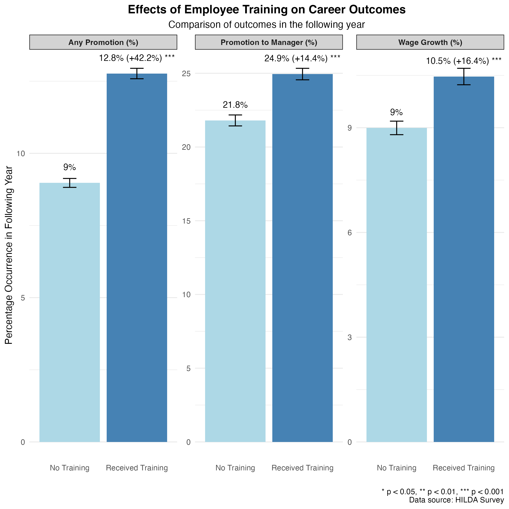

You send an employee to an expensive training program – will it actually help them get promoted or earn more? It's a question on the minds of HR directors and CFOs alike as they weigh training budgets against tangible returns. Many organisations invest significant resources in professional development, yet often struggle to measure the concrete benefits these programs deliver. In this post, I examine data from the Household, Income, and Labour Dynamics in Australia survey (a long-term study of life in Australia) to see whether participating in work-related training yields benefits in subsequent promotions and salary growth.
Measuring the Impact of Training: What the Data Show
Using data tracking 12,338 full-time Australian workers over time (2007–present), we compared career outcomes for those who received work-related training in a given year versus those who did not. To ensure a fair comparison, the analysis controlled for factors like age, tenure, and gender. The results of our analysis are shown in the bar chart below, which compares three key metrics — promotion rates, moves into a management role, and wage growth (adjusted to 2024 AUD) — between employees who received training and those who did not. The dark blue bars represent employees who received training, while the light blue bars show outcomes for those without training.

The results show training pays off modestly across the board in promotions and pay:
- Higher Promotion Rates: Employees who underwent training had about a 13% chance of receiving a promotion in the next year, compared to roughly 9% for those without training. This equates to approximately 1.4 times higher odds of being promoted for the training group.
- More Moves into Management: Among workers not already in supervisory positions, those with training were slightly more likely to step up to a managerial role (around 25% vs. 22% chance within a year). It's a smaller jump – 1.14 times higher odds – but still a positive effect.
- Faster Wage Growth: Recently trained employees enjoyed a bit more pay growth as well. Their median wage increase was 1.17 times higher than peers who did not engage in training (on average, a 10.5% raise instead of 9% over the year).
Why Development Matters
These figures confirm what many HR professionals suspect: employee development does yield returns — but not a windfall. A 42% higher chance of promotion sounds impressive, yet in absolute terms the promotion rate only jumped from about 9% to 13%. Training is no silver bullet for climbing the ladder, but it does provide an edge.
How might training help? It likely expands employees' skill sets and signals their initiative, making them more competitive when opportunities arise. Managers may view trained staff as more prepared for new responsibilities, thus slightly prioritising them for advancement and pay increases.
It's important to note that promotions and raises depend on many other factors beyond an employee's control – organisational structure, available openings, economic conditions, and individual performance all play a part. Training may not overcome these factors, but it can tip marginal cases in an employee's favour.
These modest average effects also likely mask considerable variation in training quality and effectiveness. Organisations can maximise their returns by carefully evaluating training effectiveness. Tracking promotion rates and career progression of program participants versus non-participants helps identify which training initiatives are delivering the strongest results.
Investing in Growth: Practical Implications for HR
From a strategic HR perspective, these findings support continued investment in employee learning and development programs. Even modest improvements in promotion and retention rates can accumulate into significant talent gains across a large workforce. For example, if training facilitates a handful of high-potential employees entering into leadership roles each year, the long-term payoff in productivity and engagement could be substantial.
Moreover, the positive impact on wage growth, while modest, hints at a retention benefit: employees who see their skills – and pay – advancing are more likely to stay engaged and loyal. Thus, offering training can be a win-win: employees build their careers, and organisations build a more skilled, promotable talent pool.
The Bottom Line
Does training pay off? According to the data, yes – albeit incrementally (at least on average). Work-related training was associated with higher chances of promotion and slightly faster pay growth in the following year.
For organisations, this means money spent on upskilling is put to good use; it produces measurable improvements in career progression. In a competitive talent market, even a modest edge can set your workforce apart.
For employees, the message is to take advantage of training opportunities – they can help open doors. For leaders, the takeaway is to continue fostering a learning culture: developing your people is an investment in your organisation's future, yielding more capable managers and slightly better retention of ambitious staff.